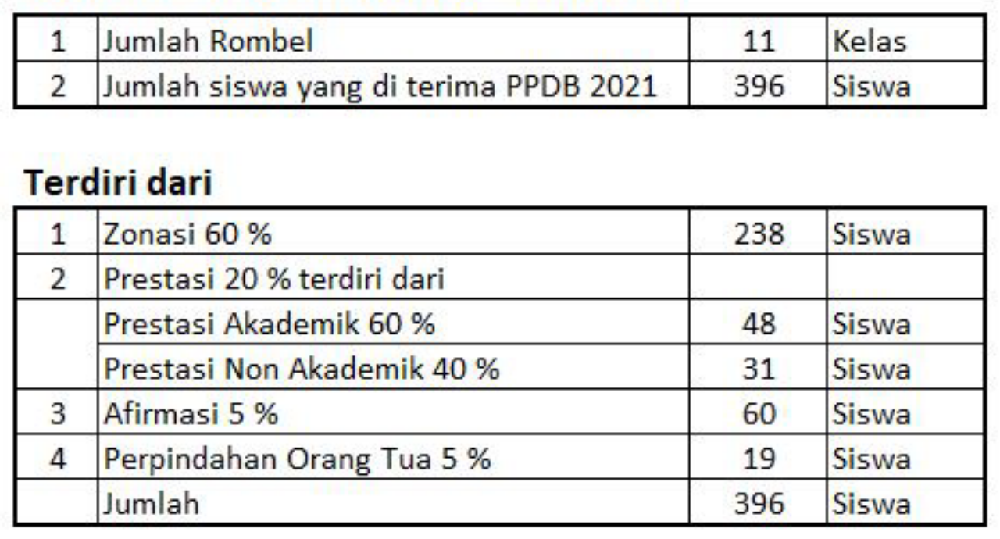
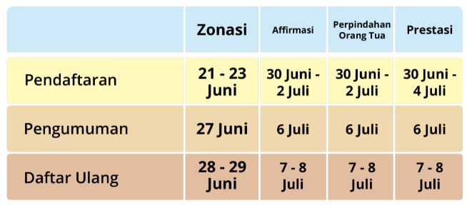

Informasi PPDB
Penerimaan Peserta Didik Baru (PPDB) Tahun Pelajaran 2021 – 2022
Selamat datang di situs Penerimaan Peserta Didik Baru (PPDB) Pletia School
Tahun Pelajaran 2021/2022. Situs ini dipersiapkan sebagai pusat informasi,
pendaftaran dan pengolahan seleksi data peserta didik baru Tahun Pelajaran
2021/2022 yang dilakukan secara online. Calon peserta didik dapat melakukan
pendaftaran melalui operator sekolah atau secara mandiri melalui aplikasi
PPDB Mandiri berbasis web.
Kuota

Persyaratan Umum, Pendaftaran SMA
-
Ijazah SMP/Sederajat atau surat keterangan yang setara dengan ijazah
SMP/ijazah
-
Berusia paling tinggi 21 (dua puluh satu) tahun pada tanggal 1 Juli 2021
dan belum menikah
- Akta Kelahiran
- Kartu Keluarga
- Pas photo berwarna ukuran 3×4 sebanyak 2 (dua) lembar
Persyaratan Khusus Jalur Afirmasi
-
Bukti keikutsertaan orang tua/peserta didik dalam program penanganan
keluarga tidak mampu dari Pemerintah Pusat atau Pemerintah Daerah.
-
Surat pernyataan dari orang tua/peserta didik yang menyatakan bersedia di
proses secara hukum apabila terbukti pada poin a di atas.
Persyaratan Khusus Perpindahan Orang Tua/Wali
-
Surat penugasan dari instasi, lembaga, kantor, atau perusahaan yang
memberi tugas.
-
SK penempatan/SK mengajar orang tua di tempat satuan pendidikan calon
peserta didik pendaftar.
Jadwal PPDB

Tatacara Pendaftaran
-
Calon peserta didik melakukan pendaftaran secara daring melalui
laman/website PPDB atau melalui operator sekolah jika tidak memungkinkan
melakukan secara mandiri.
-
Calon peserta didik yang memilih jalur zonasi menentukan titik kordinat
domisili sesuai dengan alamat kartu keluarga.
-
Calon peserta didik yang memilih jalur zonasi yang tidak memungkinkan
mendaftar secara online di tempat domisili dapat mendaftar di tempat lain
atau di sekolah yang dituju dengan mengubah titik koordinat sesuai dengan
alamat yang tertera pada kartu keluarga atau Surat Keterangan Domisili.
-
Jika terjadi perbedaan hasil perhitungan jarak antara Calon Peserta Didik
pada jalur zonasi dengan Panitia PPDB Satuan Pendidikan maka akan
dilakukan perhitungan/pengecekan bersama.
-
Calon peserta didik yang memilih jalur pendaftaran zonasi dapat memilih 2
(dua) satuan pendidikan dan dapat mengubah pilihannya sebanyak 3 (tiga)
kali selama masa pendaftaran.
-
Calon peserta didik yang memilih salah satu jalur pendaftaran dan sudah
dinyatakan diterima pada salah satu satuan pendidikan, maka tidak dapat
memilih jalur pendaftaran lain.
-
Calon peserta didik jalur afirmasi dan perpindahan orang tua melakukan
pendaftaran dengan cara mengunjungi Satuan Pendidikan yang dituju.
-
Calon peserta didik yang sudah memilih jalur pendaftaran pada SMK tidak
dapat mengikuti pendaftaran pada jalur SMA dan sebaliknya.
-
Bagi calon peserta didik dengan NISN kosong atau NISN ganda, serta calon
peserta yang berasal SLTP/MTs/Sederajat di luar Provinsi Banten maka
pendaftaran dapat dibantu oleh operator sekolah yang dituju.